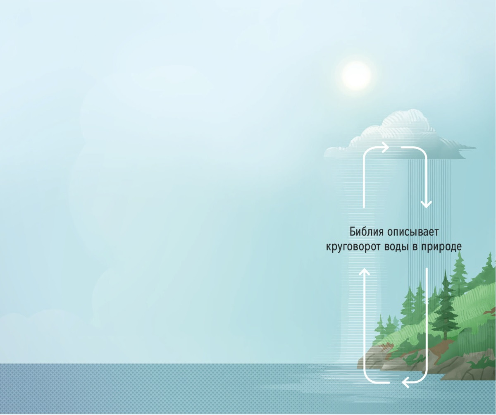
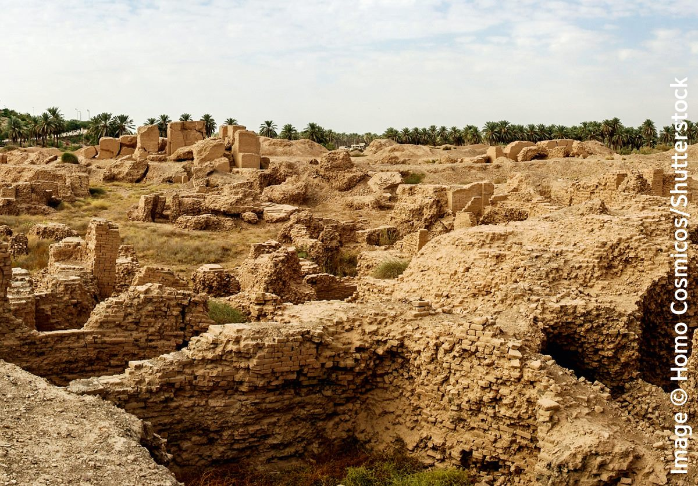
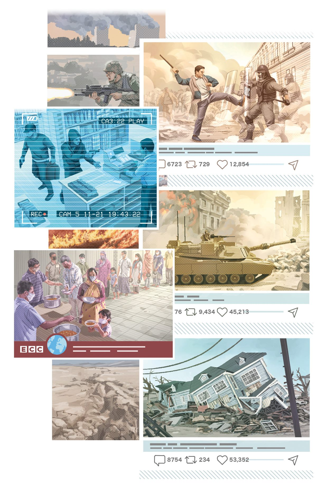
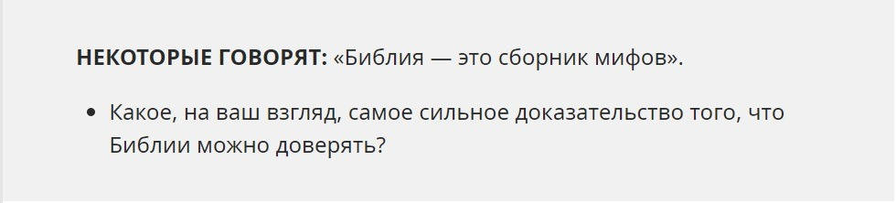

Можно ли верить Библии?
Урок 03
Можно ли верить Библии?
В Библии есть много хороших советов и обещаний. И возможно, вам любопытно с ней познакомиться. Но разумно ли верить тому, что записано в такой древней книге? Стоит ли пользоваться советами из Библии? Исполнится ли то, что она обещает? Миллионы людей в этом не сомневаются. Подумайте над следующими аргументами.
1. В Библии правда или вымысел?
Библия утверждает, что в ней записана точная и правдивая информация (Экклезиаст 12:10). В этой книге описаны события, которые происходили на самом деле и с реальными людьми. (Прочитайте Луки 1:3; Луки 3:1, 2) Многие историки и археологи подтверждают точность дат, имён, мест и событий, упомянутых в Библии.
2. Откуда мы знаем, что Библия не устарела?
Библия во многом опередила своё время. Например, в ней упоминаются некоторые научные факты. Многие из этих фактов противоречили представлениям людей прошлого. Но современная наука подтверждает, что в Библии содержится точная информация. На Библию «всегда можно положиться» (Псалом 111:8).
3. Почему библейским сообщениям о будущем можно верить?
В Библии есть пророчества *, в которых говорится «о том, что ещё не случилось» (Исайя 46:10). В ней очень точно были описаны многие исторические события, задолго до того, как они произошли. Также в ней поразительно точно описаны современные условия в мире. В этом уроке мы рассмотрим некоторые библейские пророчества. Вы удивитесь, насколько детально они исполнились!
Копните глубже
Сравните информацию из Библии с современными научными фактами и познакомьтесь с некоторыми библейскими пророчествами.
4. Библия согласуется с наукой
В древности большинство людей верили, что у Земли есть какая-то опора.
Посмотрите ВИДЕО.
ВИДЕО: «Земля висит ни на чём»
Обратите внимание, что было записано в Библии приблизительно 3500 лет назад. Прочитайте Иов 26:7 «Бог распростёр северное небо над пустотой, Подвесил землю ни на чём» и ответьте:
• Чем интересно библейское утверждение, что Земля висит «ни на чём»?
О том, как устроен круговорот воды в природе, стало известно лишь где-то 200 лет назад. Но посмотрите, что было записано в Библии уже несколько тысяч лет назад. Прочитайте Иов 36:27, 28 «Он собирает капли воды, Из тумана они превращаются в дождь, Проливаются из облаков, Щедро льются на людей.» и ответьте:
• Что удивительного в этом простом описании круговорота воды в природе?
• Выросло ли ваше доверие к Библии после прочтения этих библейских стихов?

5. Библия предсказала важные события
Прочитайте Исайи с 44:27 по 45:2 и ответьте:
• Какие подробности о завоевании Вавилона были записаны в Библии уже за 200 лет до этого события?
Посмотрите ВИДЕО.
ВИДЕО: «В Библии было предсказано падение Вавилона»
История подтверждает, что Кир, царь Персии, со своей армией захватил город Вавилон в пятьсот тридцать девятом году до нашей эры. Он осушил реку, которая защищала Вавилон, а потом прошёл через ворота, которые остались открытыми. Город захватили без боя. Это произошло более двух с половиной тысяч лет назад. Сегодня на месте Вавилона развалины. Сравните это с тем, что было предсказано в Библии.
Прочитайте Исайи 13:19, 20 «Вавилон, жемчужина царств, гордость и слава халдеев, будет Богом низвержен, как Содом и Гоморра. Не заселится он никогда, из поколения в поколение обитаем не будет; не раскинет там араб свой шатер, не остановит пастух овец на отдых»
и ответьте:
• Как исполнилось пророчество о Вавилоне?

6. В Библии было предсказано то, что происходит сегодня
В Библии наше время называется «последними днями» (Второе Тимофею 3:1). Вот что, согласно Библии, должно происходить в последние дни.
Прочитайте Матфея 24:6, 7 и ответьте:
• Какие события и условия, согласно Библии, характерны для последних дней?
Прочитайте Второе Тимофею 3:1-5 и ответьте:
• Какие черты поведения, согласно Библии, характерны для людей в последние дни?
• Замечаете ли вы подобные черты в людях сегодня?


Главная мысль
История, наука и исполнившиеся пророчества подтверждают, что Библии можно верить.
Повторение
• В Библии записана правда или вымысел?
• Какие есть примеры того, что Библия не противоречит науке?
• Убедились ли вы, что библейские пророчества исполняются? Объясните.
Вам понравилось то, что вы узнали?
Информация для читателей⛔
Настоящие материалы предоставляются на безвозмездной основе в рамках реализации права на свободу совести, убеждений и неприкосновенность личной информационной жизни. Доступ по прямой ссылке организован исключительно для удовлетворения индивидуальных культурно-просветительских и духовных потребностей читателя.
‼️Проект уважает конфиденциальность вашей частной жизни и не осуществляет публичного распространения или коммерческого использования материалов. По любым вопросам, связанным с соблюдением авторских прав или доступом к текстам, вы можете обратиться по адресу: ilyamironu@mail.ru.